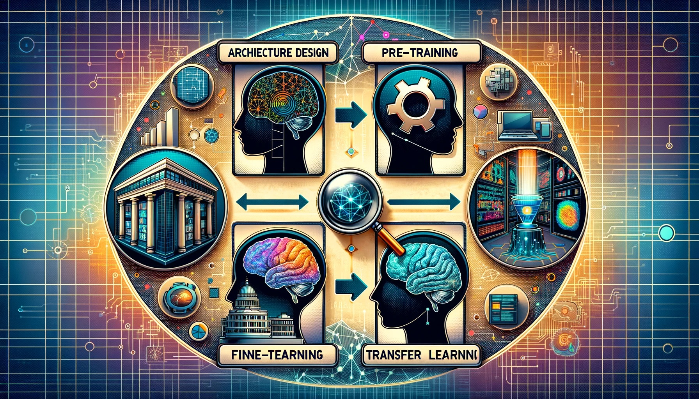

언어 모델#
언어 모델의 개요#
일반 개념#

언어 모델 정의: 언어 모델은 단어 시퀀스에 확률을 할당하거나 시퀀스에서 다음 단어를 예측하는 계산 모델.
적용 분야: 음성 인식, 기계 번역, 맞춤법 및 문법 수정, 텍스트 생성 등 다양한 자연어 처리 작업에서 중요한 역할.
모델 유형: N-gram 모델(단어 시퀀스에 의존)과 신경 언어 모델(딥러닝 기술을 활용하여 텍스트를 이해하고 생성) 등.
중요성: 언어 모델은 언어의 구조와 패턴을 포착하여 특정 맥락에서 주어진 단어나 구가 나타날 확률을 추정할 수 있음.
개발 필요성: 자연어 처리 시스템의 성능을 개선하기 위해서는 효과적인 언어 모델의 이해와 개발이 필수적.
언어 모델이 필요한 이유#

모호성 해결: 언어 모델은 음성 인식과 텍스트 처리에서 다양한 해석에 확률을 할당하고, 맥락을 바탕으로 가장 가능성 높은 해석을 선택하는 데 도움 제공.
기계 번역: 언어 간 텍스트 번역 시, 언어 모델은 목표 언어에서 단어 시퀀스의 유창성과 정확성을 선택하는 데 도움 제공.
텍스트 생성: 언어 모델은 요약, 질문 응답, 대화 시스템과 같은 작업을 위한 일관성 있고 문맥적으로 관련된 텍스트를 생성할 수 있음.
맞춤법 및 문법 수정: 언어 모델은 다양한 단어 시퀀스의 확률을 비교하여 오류를 식별하고 더 가능성 있는 대안을 제안하여 오류를 수정할 수 있음.
보조 기술: 언어 장애가 있는 사용자를 위한 대체 및 보완 커뮤니케이션(AAC) 시스템에서 언어 모델은 사용자에게 가장 가능성이 높은 단어나 구를 예측하고 제안하여 효율적인 커뮤니케이션을 가능하게 함.
N-gram 언어 모델#
일반 개념#
{kind=link}
N-gram 언어 모델 정의: N-gram 언어 모델은 시퀀스에서 다음 단어를 (n-1)개의 이전 단어에 기반하여 예측하는 접근법입니다.
N-gram 유형:
Unigram (단일어): 단어 하나만 고려하며, 맥락을 무시합니다 (n=1).
Bigram (이중어): 두 단어 시퀀스를 고려합니다 (n=2).
Trigram (삼중어): 세 단어 시퀀스를 고려합니다 (n=3).
고차 N-gram: 더 긴 단어 시퀀스를 고려합니다 (n>3).
마르코프 가정: 단어의 확률은 오직 이전의 (n-1)개 단어에만 의존합니다.
확률 추정: 큰 말뭉치에서 n-gram의 출현 횟수를 세고 정규화하여 확률을 추정합니다.
N-gram 모델의 장점 및 한계#
장점
구현이 간단하고 효율적입니다.
계산 및 메모리 사용 측면에서 효율적입니다.
한계
단어 간 장기 의존성을 포착하지 못합니다.
훈련 말뭉치에 나타나지 않은 n-gram에 대해 데이터 희소성 문제에 민감합니다.
N-gram과 확률 추정#

확률 추정: 맥락 h가 주어졌을 때 단어 w의 확률 P(w|h)을 추정할 수 있습니다.
확률 추정 방법: 큰 말뭉치에서 맥락 뒤에 타겟 단어가 나타나는 빈도를 세고 맥락의 총 빈도로 나누어 확률을 추정합니다.
\[ P(\text{pizza}|\text{I like to eat}) = \frac{C(\text{I like to eat pizza})}{C(\text{I like to eat})} \]\[ P(\text{먹습니다}|\text{저는 김치를}) = \frac{C(\text{저는 김치를 먹습니다})}{C(\text{저는 김치를})} \]
Bigram 모델#
전체 맥락을 고려하는 대신 이전 단어만을 고려하여 확률을 추정합니다.
이러한 단순화는 확률을 더 신뢰할 수 있게 추정할 수 있게 하지만, 더 긴 맥락 의존성을 포착하지 못할 수 있습니다.
\[ P(\text{pizza}|\text{I like to eat}) \approx P(\text{pizza}|\text{eat}) \]\[ P(\text{먹습니다}|\text{저는 김치를}) \approx P(\text{먹습니다}|\text{김치를}) \]
언어 모델로부터 문장 샘플링#

문장 샘플링: 언어 모델로부터 정의된 확률에 따라 문장을 생성하는 방법입니다.
과정: 더 높은 확률을 가진 문장은 낮은 확률을 가진 문장보다 생성될 가능성이 더 높습니다.
예시: Unigram 언어 모델에서는 모델의 어휘에 있는 모든 단어의 확률 분포를 시각화할 수 있으며, Bigram 모델에서는 첫 단어가
<s>로 시작하는 랜덤 bigram을 생성합니다.
사전 훈련된 언어 모델(PLMs)#
문맥화 단어 임베딩#
{kind=link}
정의: 문장의 맥락에 따라 단어의 의미를 파악하는 단어 임베딩 방식.
정적 임베딩: Word2Vec, GloVe와 같이 문맥을 고려하지 않는 임베딩.
동적 임베딩: ELMo, BERT와 같이 문맥을 반영하여 단어의 의미를 파악하는 모델.
사전 훈련된 언어 모델의 특성#
목적: 대규모 텍스트 데이터를 통해 언어의 일반적 구조를 학습.
자기지도 학습: 레이블 없는 데이터를 이용한 사전 훈련 방식.
가중치 활용: 다양한 NLP 작업에 모델을 미세 조정하기 위한 기반 제공.
분류#

훈련 목표별 분류
표준 언어 모델: 다음 단어 예측.
마스크된 언어 모델: 누락된 단어 예측.
순서 변경 언어 모델: 임의 순서로 단어 예측.
아키텍처별 분류
인코더-오직 모델: 모든 다른 토큰을 기반으로 토큰 예측.
디코더-오직 모델: 이전 토큰을 기반으로 다음 토큰 예측.
인코더-디코더 모델: 입력 시퀀스로부터 출력 시퀀스 생성.
훈련 목표 상세#
표준 자기회귀 언어 모델링
RNN, LSTM 사용: 문맥 전체 이해의 한계.
마스크된 언어 모델링
BERT의 대표적 사용: 양방향 문맥 이해.
인과적 마스크된 언어 모델링
GPT의 접근: 마스크된 단어 간 의존성 고려.
순서 변경 언어 모델링
XLNet의 특징: 시퀀스 내 모든 토큰 조합 간 양방향 의존성 학습.
Transformer 아키텍처의 적용#

구성 요소: 인코더와 디코더의 조합.
인코더: 입력 시퀀스를 벡터 표현으로 변환.
디코더: 벡터 표현을 출력 시퀀스로 변환.
PLM 적용: 다양한 NLP 작업에 대한 유연한 적용 가능성.
대규모 언어 모델(LLMs) 개요#
정의 및 특징#

대규모 언어 모델(Large Language Models, LLMs) 정의
자연어 처리(NLP) 작업을 위한 심층 학습 모델
방대한 텍스트 데이터 학습을 통한 언어 패턴, 구조, 의미 관계 이해 및 생성 능력
주요 특징
아키텍처: Transformer 기반, 자기 주의 메커니즘 사용
사전 훈련(Pre-training): 대규모 데이터셋 비지도 학습
세분화 훈련(Fine-tuning): 특정 작업/도메인 레이블 데이터셋에서의 특화
전이 학습(Transfer Learning): 다양한 NLP 작업에 대한 지식 활용
예시 모델
GPT-3, BERT, RoBERTa, T5 등
LLMs의 능력#
{kind=link}
언어 이해: 다양한 맥락에서의 텍스트 처리 및 해석
텍스트 생성: 입력 기반 맥락상 관련성 높은 텍스트 생성
질문 응답: 정보 이해 및 추출을 통한 구체적 질문 답변
번역: 다양한 언어 간 텍스트 번역
제로샷 및 퓨샷 학습: 레이블 없이 또는 소수 예시로 작업 수행
방법론#
{kind=link}
아키텍처 디자인: 고급 신경망 아키텍처 사용
사전 훈련: 대규모 데이터셋에서 비지도 학습
세분화 훈련: 작업 특화를 위한 레이블 데이터셋 훈련
전이 학습: 사전 훈련된 지식을 다양한 작업에 적용
프롬프트 엔지니어링: 입력 설계 및 수정을 통한 출력 개선
응용 분야#

기계 번역: 언어 장벽 해소
감성 분석: 텍스트의 긍정적, 부정적, 중립적 분류
텍스트 요약: 긴 문서나 기사의 핵심 정보 요약
질문 응답 시스템: 가상 비서, 고객 지원 챗봇 활용
텍스트 생성 및 콘텐츠 생성: 저널리즘, 마케팅, 창의적 글쓰기 등에 활용
대규모 언어 모델의 이슈#

자원 요구량
훈련에 막대한 계산 자원 필요
비용 및 에너지 집약적
AI 연구의 중앙집중화 우려
데이터 편향
훈련 데이터셋의 편향성 반영 가능성
부정적 또는 편향된 출력 결과 초래 가능
윤리적 고려사항
인간 글과 구분 불가능한 콘텐츠 생성
가짜 뉴스, 악의적 콘텐츠 생성에 대한 우려
모델 해석 가능성
복잡한 아키텍처와 매개변수로 인한 해석 어려움
해석성 및 설명 가능성 개선 필요
배포 과제
실제 환경에서의 배포에 고도의 계산 자원 및 전문 지식 요구
접근성 및 배포 과정 단순화 필요
공정성 및 포괄성
다양한 언어, 방언, 문화적 관점의 공정한 처리
소수 언어 및 방언의 대표성 문제
환경적 영향
훈련 시 에너지 소비로 인한 환경적 우려
에너지 효율적인 훈련 방법 및 재생 가능 에너지 사용 촉진 필요
법적 및 규제적 함의
지적 재산권, 콘텐츠 조정, 생성물에 대한 책임 등 법적 문제
책임 있는 혁신을 위한 법적, 규제적 틀 개발 필요
대규모 언어 모델의 능력과 진화#
대규모 언어 모델의 진화#
{kind=link}
언어 모델링의 발전#
1980년대의 계산력 및 데이터 증가: 통계 및 기계 학습 기반 NLP 기술의 등장 배경.
언어 모델링의 핵심: 단어 시퀀스의 가능성 추정을 위한 확률 모델 활용.
기술 전환: n-gram에서 신경망 기반 모델로의 전환, 문맥적 언어 표현 제공.
대규모 언어 모델의 우위#
능력과 규모의 도약: 언어 모델링에서의 중요한 진전.
훈련 데이터의 광범위함: 인간 지식의 방대한 영역 포괄.
신흥 능력의 발현: 작업 특정 훈련 없이도 다양한 언어 작업 수행.
기반 모델: 확장 또는 하위 집합?#
‘기반 모델’ 용어의 도입: 다양한 작업에 적응 가능한 모델 설명.
다중 모달 데이터의 포함: 더 넓은 범위의 데이터 다양성.
아키텍처 설계: 작업 특정 적응을 위한 기반층.
대규모 언어 모델의 아키텍처 진화#

초기 프레임워크: 자기지도 학습 & RNN#
자기지도 학습 알고리즘: 레이블 없는 데이터에서의 특성 표현 학습.
RNN, LSTM, GRU 사용: 초기 대규모 언어 모델 아키텍처.
RNN, LSTM, GRU의 제약사항#
순차적 데이터 처리의 어려움: 병렬화의 한계.
기울기 소실 문제: LSTM의 효과적 훈련 방해.
GRU의 성능 한계: 방대한 데이터셋에서의 성능 저하.
주의 메커니즘의 도입#
RNN의 제한 완화: 주의 메커니즘을 통한 정보 전파 및 보존 범위 확장.
단어 임베딩과 트랜스포머의 등장#
단어 임베딩의 역할: 언어 맥락과 의미 연관성 포착.
트랜스포머 아키텍처: 자기 주의 메커니즘을 사용한 데이터 처리의 혁신.
인코더-디코더 프레임워크#
트랜스포머 모델의 구조: 인코더와 디코더의 결합, 복잡한 정보 합성 및 검색 가능.
대규모 언어 모델 활용 방법#
{kind=link}
미세 조정을 통한 전이 학습 전략#
미세 조정의 개념: 사전 훈련된 모델의 작업 특정 데이터셋에서의 추가 전문화.
프롬프트 엔지니어링 및 맥락 학습#
프롬프트 엔지니어링의 중요성: 특정 작업에 대한 LLM의 적용을 용이하게 함.
명령 튜닝을 통한 제로샷 프롬프트#
명령 튜닝의 방법론: 더 정확하고 자연스러운 제로샷 프롬프트를 위한 미세 조정 방법.
대규모 언어 모델의 신흥 능력#

신흥 능력 정의
작은 모델에서는 나타나지 않지만 큰 모델에서 발견되는 능력
신흥 능력의 분류
신흥 Few-shot Prompted Tasks
작은 모델은 무작위 수준의 성능, 큰 모델은 상당히 높은 성능
BIG-Bench, Massive Multitask Benchmark 등에서 소개
신흥 Prompting 전략
충분히 큰 모델에만 작동하는 일반적인 프롬프팅 전략
지시 사항 따르기, 스크래치패드, 사고의 연쇄 프롬프팅 등 포함
향후 연구 방향
모델 아키텍처 개선
데이터의 질 및 양 향상
프롬프팅 최적화
신흥 능력의 발생 이유 및 예측 가능성 탐구
BIG-Bench 및 MMLU 작업 예시
GPT-3, LaMDA, PaLM, Chinchilla 모델의 다양한 작업 성능 소개
다양한 언어, 문화적 관점을 포괄하는 과제 포함